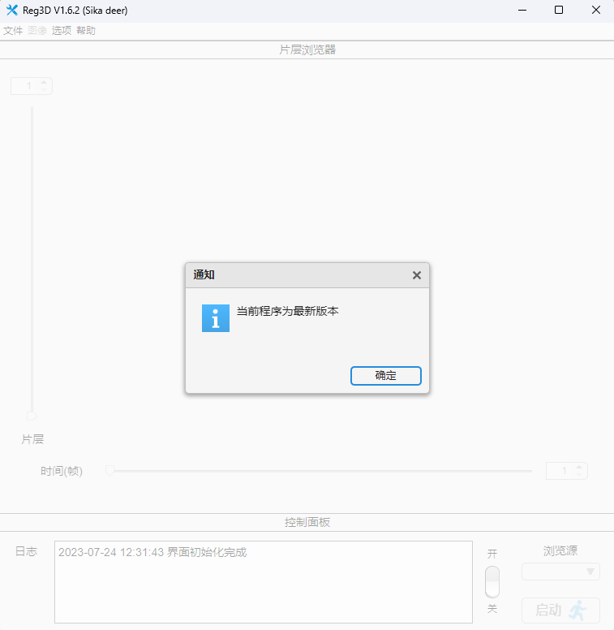
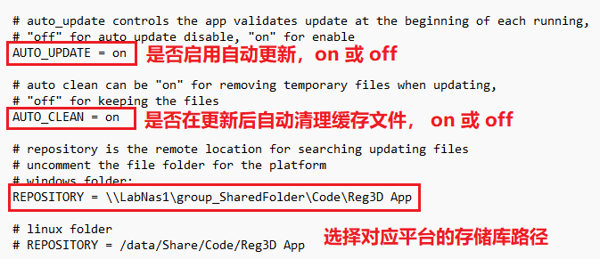
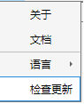

1.4.4 检查更新
程序在启动时默认进行检查更新，如下图所示。

若显示有更高版本的程序，可选更新或取消。您也可以修改更新设置，通过编辑更新配置文件：
<app根目录>\E__\si lab\Matlab Projects\CaImAn_Interface\utils\registration\reg3d_startup_plugins\update_setting.ini，
保存更改并重启程序即可。配置文件内容如下所示

您可以选择是否禁用自动更新，或针对不同平台更换存储位置(如果在启动app时遇到关于存储库路径的警告)
如果您选择手动更新程序，通过 选项->检查更新 即可。检查更新菜单如下图所示

注1：检查更新过程请按照更新提示进行，更新完成关闭app并重启app即可。
注2：检查更新功能支持 Ver >= 1.6.1 app版本。